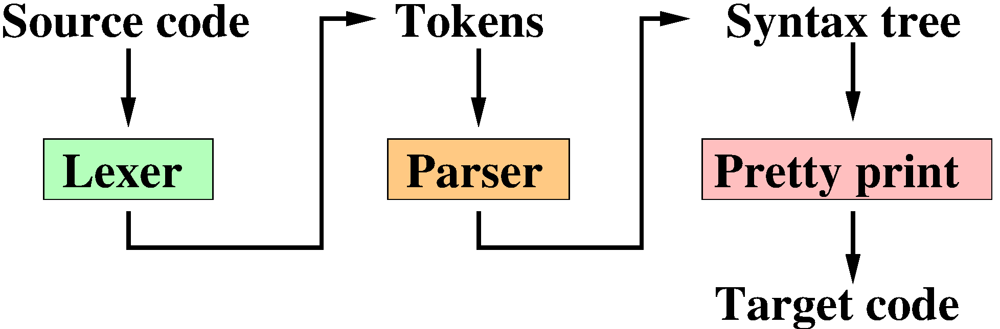
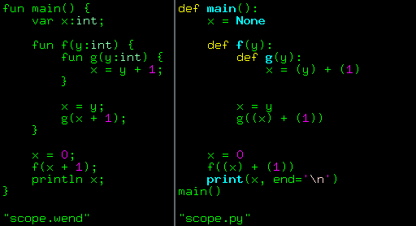
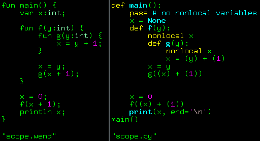
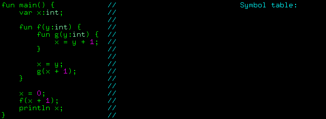
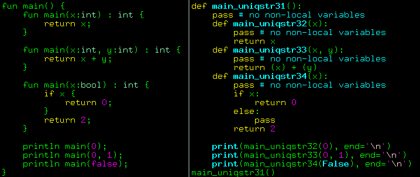

Symbol tables: variable scopes and type checking
Introduction
We continue our evening concert by request of our radio listeners. The topic of today's conversation is symbol tables. Recall that my target language is GNU assembly, but for now, as an intermediate result, I am generating python code. At the moment, all code generation is just a pretty print layer over the syntax tree. For now, the "compilation" process looks as follows:

The lexer transforms the stream of source code characters into a stream of tokens, and the parser processes them, building a syntax tree. Then, with a simple depth-first traversal of the tree, I generate code in the target language. In simple cases, this works quite well, but at the end of the last article, I deliberately left a couple of cases where the compiler fails.
Here is one of them, on the left wend source, on the right erroneous python translation:

I expect the code to print 3 on the screan, while python is showing me 0. Why? Let's look into it. I'll put wend aside for a moment to talk about python.
Variable scopes in python
I'm not going to reveal anything new, but I was surprised to discover that a significant number of my students don't know how variable binding works in this language.
Let's consider the simplest example.
For clarity, I execute the code directly from the shell in order to see both the code and the result of its execution.
I have a function foo() that prints the value of a variable bar, which is defined outside the function:
It is quite expected that a language with implicit variable declarations will find the global variable bar and print two zeroes.
But what happens if I try not only to print the value of bar but also to assign it a value?
ssloy@home:~$ python3 <<<'
def foo():
print(bar)
bar = 1
bar = 0
foo()
print(bar)
'
Traceback (most recent call last):
File "<stdin>", line 7, in <module>
File "<stdin>", line 3, in foo
UnboundLocalError: cannot access local variable 'bar' where it is not associated with a value
An error occurs, however, if we swap the assignment and print statements, everything runs perfectly, but the value of the global variable bar does not change:
This is not magic at all. It is absolutely normal and at the same time extremely counterintuitive for beginners coming to python from languages with stricter variable declarations.
Python, like most other languages, separates variables into local and global ones. Read-only context is global, read-write context is local.
Thus, if we first try to execute print(bar) and then assign bar = 1, Python knows that bar is a local variable, but it hasn't been initialized yet, and it reports an error.
You can use the word global to explicitly indicate that bar should be considered global even though it is being assigned:
My experience shows that people often limit themselves to the two concepts of global and local variables, forgetting about another very interesting keyword, nonlocal.
Let's consider the following example:
ssloy@home:~$ python3 <<<'
def counter():
count = -1
def increment():
nonlocal count
count += 1
return count
return increment
counter1 = counter()
counter2 = counter()
for _ in range(3):
print("outer counter:", counter1())
for _ in range(2):
print(" inner counter:", counter2())
'
outer counter: 0
inner counter: 0
inner counter: 1
outer counter: 1
inner counter: 2
inner counter: 3
outer counter: 2
inner counter: 4
inner counter: 5
Here we have a function counter() with a nested function increment(), and increment() refers to the variable count, which is neither local to increment() nor global.
The variable count is local to the counter() function, and increment() refers to the local variable of the enclosing context.
I created two counters, counter1 and counter2, which can count independently of each other because they refer to two different instances of the count variable.
This magic is called a closure,
and it is an extremely powerful tool that should be used with caution, so as not to break the minds of those who will maintain your code :)
Returning to our topic, this is how the correct translation from wend to Python should look. Note the appearance of the two lines with the nonlocal keyword:

Don't rush to scroll past, make sure you understand how the code on the right is executed and why nonlocal makes it a correct translation.
Christmas tree decorations
Now let's figure out how the compiler can discover the relations and add such information. We need to modify the compilation process by adding a semantic analysis phase, which will be called immediately after the syntax tree is built:

The parser grows a Christmas tree, and the semantic analyzer decorates it (by the way, this is not a joke, compiler engineers actually use this jargon). Then, code generation to the target language proceeds from the decorated tree. This is what the syntax tree looks like for our example after the semantic analyzer pass:
{kind=link}
Note the information marked in red, which was added by the semantic analyzer.
The most convenient place to store it is in the deco dictionary, which I provided for each tree node.
So far, I have stored things like the line number in the source file for error reports, and now it will be useful for semantic analysis.
I hope it is clear what information we need to add to the tree. But how exactly do we do this? This is where symbol tables come to the rescue.
Symbol Tables
Let me illustrate the operation of a primitive semantic analyzer:

I need a data structure to which I will gradually add (and remove!) information about variable scopes. I will do this by traversing depth-first the syntax tree. For compactness in my animation, I have drawn the source code instead of the syntax tree, but it should be understood that the source code has long been discarded by this point, and I am working with the tree. It is simply easier to draw a traversal of the source code lines, which exactly corresponds to a DFS in the syntax tree.
In wend, scopes are defined by functions, so starting from the root of the tree, I open a new scope: push_scope(main).
Then I add all local variables to my table: add_var(x).
In my animation, I have drawn the type of the variable because it is visible in the code anyway, but at this moment, I don't need it. I will use it later for type checking.
The next node in my syntax tree is the nested function f.
We open a new scope by creating a nested table: push_scope(f), and add all local variables to it, here it's just one argument add_var(y).
Same happens with the function g: push_scope(g), add_var(y).
And here comes the most interesting part: we encounter the Assign node, which corresponds to the line x = y + 1.
In our syntax tree, all we know about the variable x is its identifier, just a string, nothing more.
Let's find out more about it: find_var(x).
We know that we are at the third level of nesting, so let's check if there is an entry for x in the current scope? No, there isn't.
At the second level? Also no.
At the first level? Yes, found it! Thus, we can tell the second and third scope blocks that they use a non-local variable x.
At the same time (future work), we have found the type of the variable, and now we can check if the variable type in the assignment statement matches: we know that on the right side there is an ArithOp, which must be an integer.
If x has a different type, it is the right time to throw an error.
We have figured out the functionality of the symbol table, let's move on to the implementation. I made it extremely primitive:
class SymbolTable():
def __init__(self):
self.variables = [{}] # stack of variable symbol tables
self.ret_stack = [ None ] # stack of enclosing function symbols, useful for return statements
def add_var(self, name, deco):
if name in self.variables[-1]:
raise Exception('Double declaration of the variable %s' % name)
self.variables[-1][name] = deco
def push_scope(self, deco):
self.variables.append({})
self.ret_stack.append(deco)
def pop_scope(self):
self.variables.pop()
self.ret_stack.pop()
def find_var(self, name):
for i in reversed(range(len(self.variables))):
if name in self.variables[i]:
return self.variables[i][name]
raise Exception('No declaration for the variable %s' % name)
I store nested scopes as a list of dictionaries, where the keys are identifiers and the values are the deco decoration of the corresponding syntax tree node (the type of the variable is stored in deco).
When entering a scope, I add a dictionary (push_scope), and I remove it (pop_scope) on exit.
In parallel, I maintain a similar list of decorations from function nodes, which allows the syntax analyzer to add information about non-local variables to the tree.
Here is what the semantic analyzer code looks like, it is just a primitive depth-first tree traversal that queries the symbol table whenever it encounters a variable:
Semantic analyzer
from syntree import *
from symtable import *
def build_symtable(ast):
if not isinstance(ast, Function) or ast.name != 'main' or ast.deco['type'] != Type.VOID or len(ast.args)>0:
raise Exception('Cannot find a valid entry point')
symtable = SymbolTable()
process_scope(ast, symtable)
def process_scope(fun, symtable):
fun.deco['nonlocal'] = set() # set of nonlocal variable names in the function body, used in "readable" python transpilation only
symtable.push_scope(fun.deco)
for v in fun.args: # process function arguments
symtable.add_var(*v)
for v in fun.var: # process local variables
symtable.add_var(*v)
for f in fun.fun: # then process nested function bodies
process_scope(f, symtable)
for s in fun.body: # process the list of statements
process_stat(s, symtable)
symtable.pop_scope()
def process_stat(n, symtable): # process "statement" syntax tree nodes
if isinstance(n, Print):
process_expr(n.expr, symtable)
elif isinstance(n, Return):
if n.expr is None: return
process_expr(n.expr, symtable)
elif isinstance(n, Assign):
process_expr(n.expr, symtable)
deco = symtable.find_var(n.name)
update_nonlocals(n.name, symtable) # used in "readable" python transpilation only
elif isinstance(n, FunCall): # no type checking is necessary
process_expr(n, symtable)
elif isinstance(n, While):
process_expr(n.expr, symtable)
for s in n.body:
process_stat(s, symtable)
elif isinstance(n, IfThenElse):
process_expr(n.expr, symtable)
for s in n.ibody + n.ebody:
process_stat(s, symtable)
else:
raise Exception('Unknown statement type')
def process_expr(n, symtable): # process "expression" syntax tree nodes
if isinstance(n, ArithOp):
process_expr(n.left, symtable)
process_expr(n.right, symtable)
elif isinstance(n, LogicOp):
process_expr(n.left, symtable)
process_expr(n.right, symtable)
elif isinstance(n, Integer):
pass
elif isinstance(n, Boolean):
pass
elif isinstance(n, Var):
deco = symtable.find_var(n.name)
update_nonlocals(n.name, symtable) # used in "readable" python transpilation only
elif isinstance(n, FunCall):
for s in n.args:
process_expr(s, symtable)
elif isinstance(n, String):
pass
else:
raise Exception('Unknown expression type', n)
def update_nonlocals(var, symtable): # add the variable name to the set of nonlocals
for i in reversed(range(len(symtable.variables))): # for all the enclosing scopes until we find the instance
if var in symtable.variables[i]: break # used in "readable" python transpilation only
symtable.ret_stack[i]['nonlocal'].add(var)
The working commit is available here, now scope.wend compiles as it should!
Type checking and function overloading
We have already encountered rudimentary type checking of variables, but for a complete picture, we also need to add functions to the symbol table.
When we encounter a call to f(x+1), we don't know anything about the type returned by f because the FunCall tree node only stores the identifier f, nothing more.
Easy to fix: in parallel with the list of variable symbol dictionaries, let's create a list of function symbol dictionaries and add them before opening the corresponding scope.
In the variable dictionary, the key was the variable identifier. With functions, it's a bit more complicated: I want to be able to overload functions, so the function name is not a unique key. No problem, I will use the function signature as the key. A signature is a simple tuple (function name, list of argument types).
I added a dozen lines to the symtable.py module and threw some exceptions for type mismatches in the analyzer.py module,
see the code changes here.
As a final touch, I added function overloading: for this, I simply append a unique suffix to the function name, and voilà, we have a fully working compiler from wend to python!

You can get the current code by tag v0.0.3.
Next on the channel
This time we fixed the compiler by using the nonlocal keyword.
But let's not lose from the sight the fact that our target language is not Python, but assembly, and it certainly knows nothing about closures!
Next time we will still use python as the target language, but with a restriction: we would not be able to variables.
I will only have four global variables, and no others can be used: I will emulate registers and the stack.
At this point, the generated code will truly lose readability, but once we've made to this point, assembly generation will be a piece of cake.